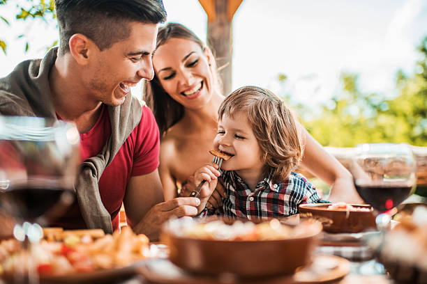

Aspiramos a convertirnos en una marca icónica en el mundo de los snacks creativos, siendo la primera elección para quienes buscan una experiencia gastronómica divertida, deliciosa y visualmente original. Queremos llevar nuestros capibaras de papa a cada rincón del país, participando activamente en ferias, eventos y espacios donde la comida sea una celebración de la imaginación y el buen gusto.
Soñamos con ver a Papibaras crecer como un símbolo de alegría culinaria, conquistando corazones con cada bocado y creando una comunidad que valore la originalidad, la calidad y la pasión por compartir momentos únicos a través de la comida.
 ← Volver al inicio